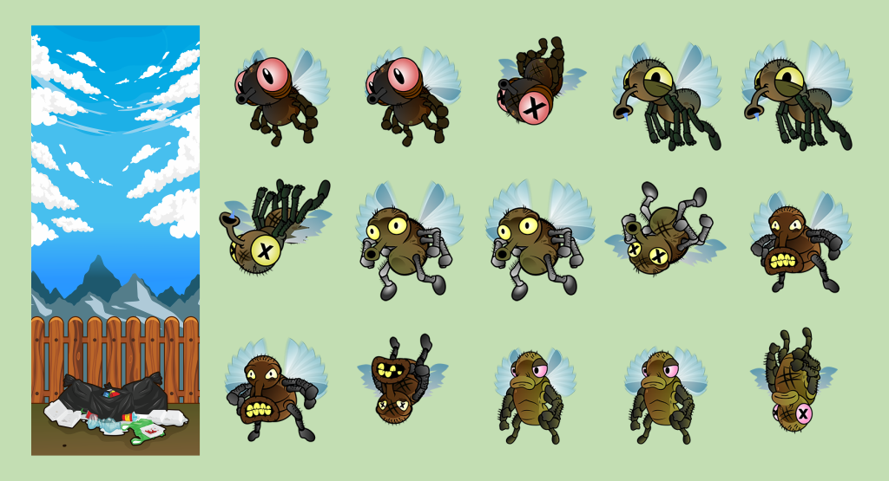
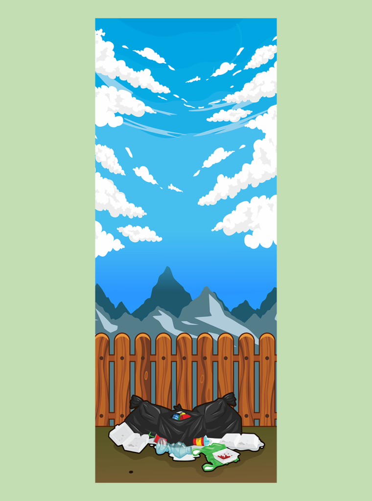
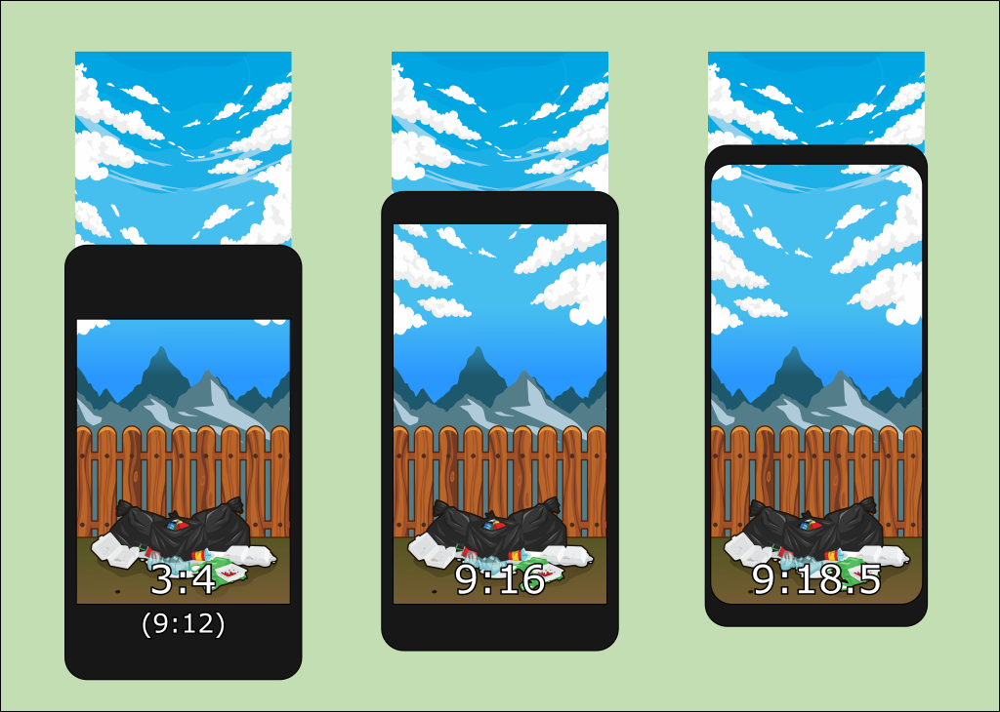
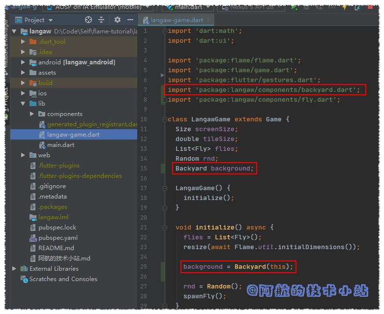
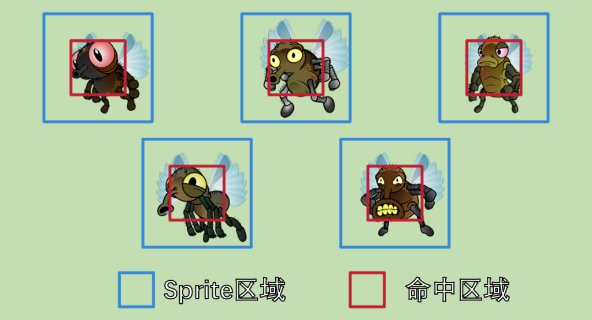
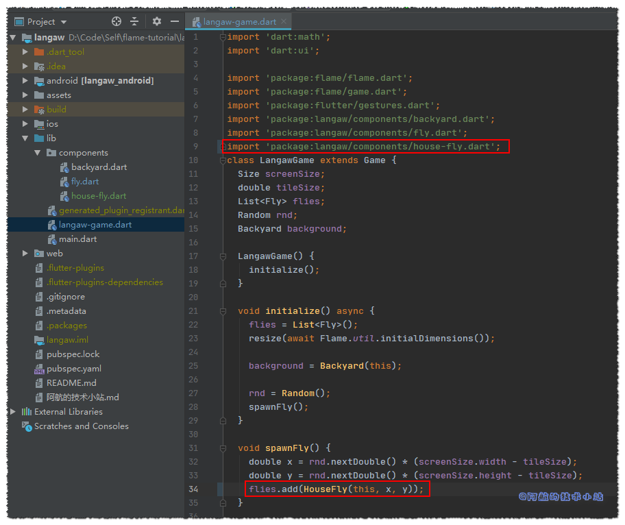
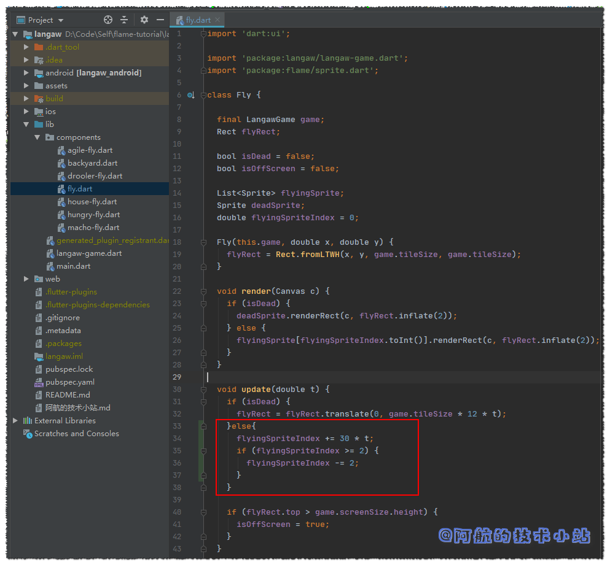
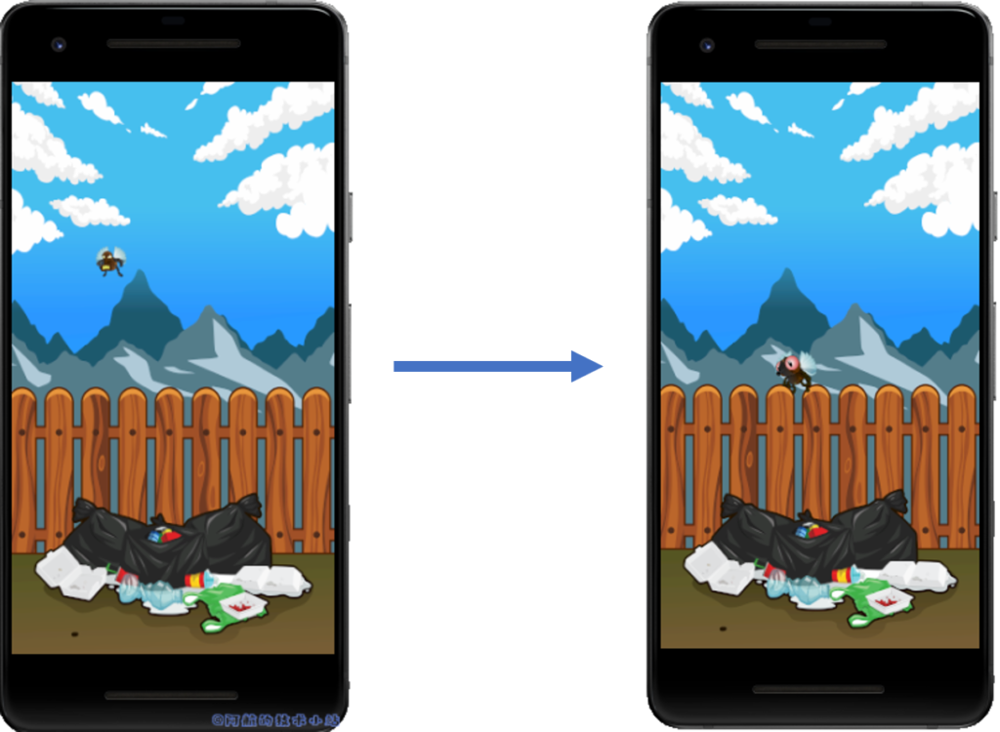
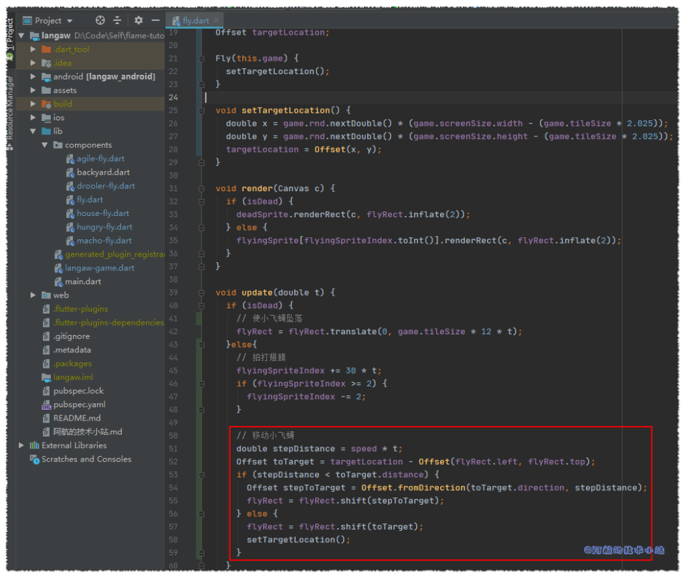
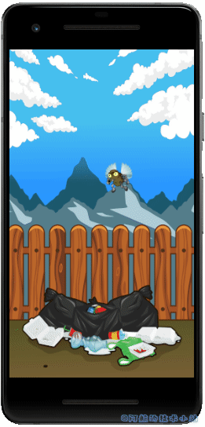

引言
在本系列教程的这一章, 我们将会把重心放在图形和动画上. 我们在上一章《开发2D休闲游戏：消灭小飞蝇》 中创建了一款拥有交互的休闲手游.
游戏的核心不变, 但是我们需要为其增加更多的位移和更好的图像.
下面是我们本系列教程的文章目录:
- Flutter 游戏开发(flame) F l ame介绍
- Flutter 游戏开发(flame) 01 开发2D休闲游戏：消灭小飞蝇(1/5)
- Flutter 游戏开发(flame) 02 图形和动画(2/5) 本章
- Flutter 游戏开发(flame) 03 界面和弹窗(3/5)
- Flutter 游戏开发(flame) 04 分数, 存档和音效(4/5)
- Flutter 游戏开发(flame) 05 收尾和打包(5/5)
需具备的条件
- 本系列教程第一部分 的全部要求.
- 图像资源文件- 图像资源可在网上的游戏资源网站找到(比如Open Game Art ), 但是要确保感谢原作者.
代码的规则和此前的章节一致.
图像资源

正如你在上一章中看到的上图, 我们实际上已经为小飞蝇准备好了图像资源. 这是一张来自于Open Game Art的小飞蝇图片
. 它被授权为CC0意思是可用于公共域, 也就是随便用.
但是我们不会用上面的那个, 而是用这些:

🔴 注意: 如果你遵循本教程, 则可以使用上述资源包. 本资源包是Github上Langaw(原作者)
项目的一部分, 该项目获得CC-BY-NC-ND许可证的许可.
这意味着您可以共享、复制或者重新分发资源.
- 你必须在感谢中提到, 提供许可证的链接, 并标明你是否进行了更改.
- 你不得将资源用于商业目的.
- 如果混合, 转换或者构建资源, 则不能分发修改后的资源.
- 你不得应用法律条款或技术措施, 在法律上限制他人做许可证允许的任何事情.
阿航在这里提醒: 目前国内的版权保护做的不够好. 希望大家能够保护资源原作者辛苦的创作🙏🙏! 不能使用未经许可且无版权的资源, 向盗版说不👋!
继续构建游戏
我们在上一章实现了: 点击一只小飞蝇, 其被击落并且会生成一只新的小飞蝇.
本章不会添加太多功能, 但是界面会有大突破. 一个好看的界面会直线提升一个游戏的乐趣.
第一步: 添加图形资源
首先, 下载图形资源包 . (如果没下载的话)
或者你也可以用自己的资源文件, 或者从资源网站上(比如OpenGameArt.org )获取.
🟡 注意: 如果你打开资源包, 将会注意到有5种不同类型的小飞蝇, 且每个小飞蝇都有三个与其相关联的文件. 这是因为我们以后会有五种不同类型的、拥有不同能力的小飞蝇. 会在后面详解这部分内容.
添加资源文件至Flame
在项目根目录创建目录, 命名为assets.
并在这个新目录./assets下再创建一个images目录.
Flame要求我们必须把资源文件放在./assets/images下.
基于这个规定, 我们可以将资源文件任意放置. 我们可以把它们都乱糟糟的放在那, 但这不是一个好的代码习惯👨🏫!
我们来整理一下, 把fly目录放在./assets/images/flies下, 然后把background目录放在./assets/images/bg下.
我们的./assets/images下应该存在以下文件:
./assets
./assets/images
./assets/images/bg
./assets/images/bg/backyard.png
./assets/images/flies
./assets/images/flies/agile-fly-1.png
./assets/images/flies/agile-fly-2.png
./assets/images/flies/agile-fly-dead.png
./assets/images/flies/drooler-fly-1.png
./assets/images/flies/drooler-fly-2.png
./assets/images/flies/drooler-fly-dead.png
./assets/images/flies/house-fly-1.png
./assets/images/flies/house-fly-2.png
./assets/images/flies/house-fly-dead.png
./assets/images/flies/hungry-fly-1.png
./assets/images/flies/hungry-fly-2.png
./assets/images/flies/hungry-fly-dead.png
./assets/images/flies/macho-fly-1.png
./assets/images/flies/macho-fly-2.png
./assets/images/flies/macho-fly-dead.png
注册资源文件至Flutter
在我们使用这些资源文件前, 我们需要通知Flutter我们需要将这些文件打包到APP内. 所以我们需要进入
./pubspec.yaml, 找到flutter下的assets中添加:
flutter:
uses-material-design: true
assets:
- assets/images/bg/backyard.png
- assets/images/flies/agile-fly-1.png
- assets/images/flies/agile-fly-2.png
- assets/images/flies/agile-fly-dead.png
- assets/images/flies/drooler-fly-1.png
- assets/images/flies/drooler-fly-2.png
- assets/images/flies/drooler-fly-dead.png
- assets/images/flies/house-fly-1.png
- assets/images/flies/house-fly-2.png
- assets/images/flies/house-fly-dead.png
- assets/images/flies/hungry-fly-1.png
- assets/images/flies/hungry-fly-2.png
- assets/images/flies/hungry-fly-dead.png
- assets/images/flies/macho-fly-1.png
- assets/images/flies/macho-fly-2.png
- assets/images/flies/macho-fly-dead.png
🟡 一定要注意
pubspec.yaml的文件格式. 每级中间会有两个空格. 最好导入文件后运行一下APP, 确保没有问题. 若有问题, 编译器则会报错.
游戏开始前预加载资源文件
如果你是在开发一个大型的游戏, 玩家每进入另一个房间之前, 都要预加载一些资源文件.
我们的教程的游戏比较简单, 在游戏开始前加载所有的资源文件就可以了.
打开./lib/main.dart, 导入:
import 'package:flame/flame.dart';
在main函数中, 在设置全屏和锁定屏幕方向后面添加:
Flame.images.loadAll([
'bg/backyard.png',
'flies/agile-fly-1.png',
'flies/agile-fly-2.png',
'flies/agile-fly-dead.png',
'flies/drooler-fly-1.png',
'flies/drooler-fly-2.png',
'flies/drooler-fly-dead.png',
'flies/house-fly-1.png',
'flies/house-fly-2.png',
'flies/house-fly-dead.png',
'flies/hungry-fly-1.png',
'flies/hungry-fly-2.png',
'flies/hungry-fly-dead.png',
'flies/macho-fly-1.png',
'flies/macho-fly-2.png',
'flies/macho-fly-dead.png',
]);
💡 代码解析: 看起来代码很长, 实际上只有一行. 我们把资源文件作为一个List传入了
images.loadAll()里面了.
这些资源文件将缓存在Flame的静态变量中, 便于我们后续重复使用.
第二步: 修改背景图
当前的背景是很单调的纯色, 虽然颜色挺好看的, 但是游戏背景应该更绚丽多彩.
我们在这一步将把背景换成这个:

这是资源包中的backyad.png图片.
如你所见, 图片很高. 因为我们只关心宽度(上一章讲过). 手机会尽可能合理的安排背景铺满整个屏幕.
添加背景Component
将背景的逻辑与其组件分离出来比较好.
所以, 创建一个component文件./lib/components/backyard.dart:
import 'dart:ui';
import 'package:flame/sprite.dart';
import 'package:langaw/langaw-game.dart';
class Backyard {
final LangawGame game;
Sprite bgSprite;
Backyard(this.game) {
bgSprite = Sprite('bg/backyard.png');
}
void render(Canvas c) {}
void update(double t) {}
}
此文件声明了Backyad类, 该类具有构造函数和另外两个函数(和game loop以及fly component类似). 我们暂时用不到这些函数, 但也要留在那里方便后续使用.
此类包含final的LangawGame实例变量, 它将指向包含此component的game实例(和./lib/components/fly.dart十分相似).
另一个类型为Sprite的bgSprite变量用于保存等下会用到的sprite数据.
在构造函数内部, 我们通过创建一个新的Sprite初始化bgSprite变量, 并传递要使用的资源文件名. 该文件已加载至./lib/main.dart, 因此可以立即使用, 无需等待.
🟡 与项目中其他文件一样, 我们在顶部导入所需要的包. 导入
dart:ui以使用Canvas类. 导入flame的sprite.dart以使用Sprite. 最后, 导入langaw-game.dart以使用我们的LangawGame类.
尺寸说明
如果你查看了图片的详细属性, 会发现它的分辨率是1080×2760的.
我们在使用Flutter时, 不需要被物理像素所困扰, 甚至不用担忧逻辑像素. 我们只需要关心我们的背景图片是9个区块的宽度.
1080 像素 ÷ 9 区块 = 120 像素/区块
2760 像素 ÷ 120 像素/区块 = 23 区块
如上面的公式所示, 这个图像的宽度为9个区块, 高度为23个区块.
绘制背景
是时候绘制背景了. 我们将背景图的底部的锚点定在手机屏幕的底部.
为此, 我们需要定义一个矩形, 用来保存背景的尺寸. 我们需要正确计算尺寸, 以便在渲染过程中保留背景的纵横比.
我们添加一个实例变量, 类型为Rect的bgRect:
Rect bgRect;
在构造函数中, 在初始化bgSprite属性的下方添加:
bgRect = Rect.fromLTWH(
0,
game.screenSize.height - (game.tileSize * 23),
game.tileSize * 9,
game.tileSize * 23,
);
💡 解析: 这其实也只是一行代码, 垂直排下来只是为了可读性. 4个参数分别对应左(
x), 上(y), 宽和高的值.
我们以完整的宽度来绘制背景, 因此背景从左(x)的0开始, 扩展至game.tileSize * 9的宽度. 我们也可以用game.screenSize.width, 因为game.tileSize等于game.screenSize.width除以9.
我们知道背景图是9×23的(单位是"区块"). 因此, 要绘制整个图像, 我们只需传递game.tileSize * 23作为高度.

最后, 顶部(y)是背景图片高度减去屏幕高度的负数.
如果玩家的屏幕的纵横比为9:16, 屏幕的高度将会是16 区块大小. 我们从中减去23 区块大小, 就会得到-7 区块大小. 这意味着绘制背景时, 图片顶部要比屏幕顶部高7个区块.
通过此公式, 背景图将始终固定在屏幕底部.
我们在调用此component的render方法时绘制背景图像：
bgSprite.renderRect(c, bgRect);
代码截图:

将背景添加至游戏
现在, 我们的背景component已经完成了, 我们来将其添加到我们的游戏逻辑中. 打开./lib/langaw-game.dart.
因为需要使用Backyard类, 导入:
import 'package:langaw/components/backyard.dart';
然后添加类型为Backyard的变量background:
Backyard background;
在initialize()中, 实例化一个新的Backyard类型的对象至background实例变量. 必须在确定屏幕大小之后进行:
background = Backyard(this);
就像创建小飞蝇一样, 我们通过this关键字来传递当前的LangawGame实例.
代码截图:

然后在render函数内部, 我们调用background的render函数, 并传入Canvas.
我们目前只用了四条线绘制了一个纯色的矩形. 我们需要将其替换:
Rect bgRect = Rect.fromLTWH(0, 0, screenSize.width, screenSize.height);
Paint bgPaint = Paint();
bgPaint.color = Color(0xff576574);
canvas.drawRect(bgRect, bgPaint);
// 替换为
background.render(canvas);
🟢 运行游戏, 应该可以看到背景了:

看起来蛮顺利的!😜😜
第三步: 变更小飞蝇图片
我们将会有五种不同的小飞蝇. 现在我们来关注它们的图片差异, 但也要为它们的不同功能做好准备.
这里我们会用到继承的概念. 即创建一个子类, 扩展现有的父类(超类).
调整小飞蝇sprite尺寸
在资源包中的文件的尺寸是确定的, 命中区域(flyRect)的矩形比整个图片小一圈.

如上图所示, sprite将会在蓝框内绘制(我们称其为sprite区域), 但若想击中需要在红框内(命中区域, 代码中为flyRect).
准备小飞蝇父类
在创建首个子类前, 我们要保证我们的父类准备好被扩展.
我们将使用已存在的Fly作为父类, 所以打开./lib/components/fly.dart. 所有的小飞蝇将会共享在Fly中的通用功能.
首先删除drawRect, 因为我们不再绘制矩形了. 清空render(), 像这样:
void render(Canvas c) {}
然后, 删除所有对flyPaint的引用. 因为该对象只是用来绘制矩形的. 移除实例变量:
// 移除它!
Paint flyPaint;
然后在构造函数中删除:
// 移除这两行!
flyPaint = Paint();
flyPaint.color = Color(0xff6ab04c);
再然后, 删除onTapDown处理器的:
// 移除这行!
flyPaint.color = Color(0xffff4757);
flyRect留在这里, 因为我们将其作为命中矩形.
添加sprites
Fly类中的每个实例, 我们都需要添加两组Sprite:
- 其中一组由2个Sprite组成, 它们将一个接一个的显示, 提供飞行动画(因为煽动翅膀的动画不止由一张图片组成). 将使用
List类型. - 另一组只有1个Sprite, 将显示死掉的小飞蝇.
我们还需要一个实例变量, 该变量将存储哪些Sprite将显示飞行动画.
导入Flame的sprite.dart:
import 'package:flame/sprite.dart';
在实例变量中添加:
List flyingSprite;
Sprite deadSprite;
double flyingSpriteIndex = 0;
🟡 提示: sprite变量不会在这里进行初始化, 因为每个子类都会使用不同的sprite.
在render()中, 我们来根据小飞蝇的状态(活着/死掉)渲染其sprite:
void render(Canvas c) {
if (isDead) {
deadSprite.renderRect(c, flyRect.inflate(2));
} else {
flyingSprite[flyingSpriteIndex.toInt()].renderRect(c, flyRect.inflate(2));
}
}
💡 解析:
render函数通过isDead的值来判断显示哪一个sprite. 如果死掉, 显示deadSprite, 若没死, 显示flyingSprite集合的第一项.
至于为什么要进行flyingSpriteIndex.toInt(), 是因为List的下标都是integer类型. 我们的flyingSpriteIndex是double类型, 所以我们要将其转换为int. 你问阿航为什么它是double类型的?因为我们将使用update函数中的时间增量(double类型)的值来与其相加, 等下你会看到.
最后一部分, .inflate(2), 只是创建了一个矩形的副本, 该矩形被调用, 但从中心开始被放大(在本例中 × 2). 还记得上面的那张蓝框(sprite)和红框(命中区)图吗? 那就是我们使用2作为值的原因.
创建首个子类
让我们创建第一个Fly实现类, 最简单也最常见, 我们称其为HouseFly(家蝇).
在./lib/components下创建文件house-fly.dart.
我们打开新创建的./lib/components/house-fly.dart, 创建我们的基本component类, 但是这次是扩展Fly类:
import 'package:flame/sprite.dart';
import 'package:langaw/components/fly.dart';
import 'package:langaw/langaw-game.dart';
class HouseFly extends Fly {
HouseFly(LangawGame game, double x, double y) : super(game, x, y) {
flyingSprite = List();
flyingSprite.add(Sprite('flies/house-fly-1.png'));
flyingSprite.add(Sprite('flies/house-fly-2.png'));
deadSprite = Sprite('flies/house-fly-dead.png');
}
}
💡 解析: 导入所需的依赖. 然后我们声明一个类, 并让其继承
Fly类. 这样就有效的创建了一个子类.
子类可以方位和重写父类(超类)的变量和函数.
我们的构造函数调用super, 它告诉程序在运行构造函数内的代码前先运行父类的构造函数. 构造函数只是镜像了超类构造函数所需的参数, 并在调用super时将其转发.
在构造函数内部, 我们创建新的List<Sprite>初始化flyingSprite. 将两个sprite分别添加到List中, 它们分别对应飞行动画的2个帧.
然后我们把家蝇死去的图片加载至Sprite中, 并将其分配给deadSprite.
我们没有重写render和update函数, 因为这种小飞蝇没有特殊的属性. 目前, 所有功能将与其他小飞蝇一致.
生成新的小飞蝇
我们来修改spawnFly函数, 让它生成HouseFly而不是父类Fly. 打开./lib/langaw-game.dart.
在import区域(文件顶部), 让我们导入上面创建的子类:
import 'package:langaw/components/house-fly.dart';
然后生成HouseFly, 替换之前的生成Fly:
// 替换
flies.add(Fly(this, x, y));
// 为
flies.add(HouseFly(this, x, y));
代码截图:

🟢 运行游戏, 查看效果:

第四步: 创建更多类型的小飞蝇
这一部分就轻车熟路了, 我们为每个类型的小飞蝇创建相应的子类.
🟡 提示: 在这一部分, 不会过多的做代码解析. 因为它们与
HouseFly基本相同. 唯一的区别就是引用不同的文件名.
口水蝇🤤
创建./lib/components/drooler-fly.dart:
import 'package:flame/sprite.dart';
import 'package:langaw/components/fly.dart';
import 'package:langaw/langaw-game.dart';
class DroolerFly extends Fly {
DroolerFly(LangawGame game, double x, double y) : super(game, x, y) {
flyingSprite = List();
flyingSprite.add(Sprite('flies/drooler-fly-1.png'));
flyingSprite.add(Sprite('flies/drooler-fly-2.png'));
deadSprite = Sprite('flies/drooler-fly-dead.png');
}
}
迅捷蝇🐱🏍
创建./lib/components/agile-fly.dart:
import 'package:flame/sprite.dart';
import 'package:langaw/components/fly.dart';
import 'package:langaw/langaw-game.dart';
class AgileFly extends Fly {
AgileFly(LangawGame game, double x, double y) : super(game, x, y) {
flyingSprite = List();
flyingSprite.add(Sprite('flies/agile-fly-1.png'));
flyingSprite.add(Sprite('flies/agile-fly-2.png'));
deadSprite = Sprite('flies/agile-fly-dead.png');
}
}
肌肉蝇💪
创建./lib/components/macho-fly.dart:
import 'package:flame/sprite.dart';
import 'package:langaw/components/fly.dart';
import 'package:langaw/langaw-game.dart';
class MachoFly extends Fly {
MachoFly(LangawGame game, double x, double y) : super(game, x, y) {
flyingSprite = List();
flyingSprite.add(Sprite('flies/macho-fly-1.png'));
flyingSprite.add(Sprite('flies/macho-fly-2.png'));
deadSprite = Sprite('flies/macho-fly-dead.png');
}
}
import 'package:flame/sprite.dart';
import 'package:langaw/components/fly.dart';
import 'package:langaw/langaw-game.dart';
class MachoFly extends Fly {
MachoFly(LangawGame game, double x, double y) : super(game, x, y) {
flyingSprite = List();
flyingSprite.add(Sprite('flies/macho-fly-1.png'));
flyingSprite.add(Sprite('flies/macho-fly-2.png'));
deadSprite = Sprite('flies/macho-fly-dead.png');
}
}
饥饿蝇🥴
创建./lib/components/hungry-fly.dart:
import 'package:flame/sprite.dart';
import 'package:langaw/components/fly.dart';
import 'package:langaw/langaw-game.dart';
class HungryFly extends Fly {
HungryFly(LangawGame game, double x, double y) : super(game, x, y) {
flyingSprite = List();
flyingSprite.add(Sprite('flies/hungry-fly-1.png'));
flyingSprite.add(Sprite('flies/hungry-fly-2.png'));
deadSprite = Sprite('flies/hungry-fly-dead.png');
}
}
随机生成小飞蝇
现在我们有了5种不同的小飞蝇, 我们来使每次生成小飞蝇时, 生成5种中的随机一种.
在./lib/langaw-game.dart中导入其他所有小飞蝇, 保证我们可以使用它们:
import 'package:langaw/components/agile-fly.dart';
import 'package:langaw/components/drooler-fly.dart';
import 'package:langaw/components/hungry-fly.dart';
import 'package:langaw/components/macho-fly.dart';
在spawnFly函数中, 进行替换:
替换:
flies.add(HouseFly(this, x, y));
为:
switch (rnd.nextInt(5)) {
case 0:
flies.add(HouseFly(this, x, y));
break;
case 1:
flies.add(DroolerFly(this, x, y));
break;
case 2:
flies.add(AgileFly(this, x, y));
break;
case 3:
flies.add(MachoFly(this, x, y));
break;
case 4:
flies.add(HungryFly(this, x, y));
break;
}
💡 解析: 我们首先从
rnd的nextInt函数中获取一个随机整数.5代表了生成的随机数在小于五的整数. 多数语言从0开始计数, 所以可能的数字有:[0, 1, 2, 3, 4].然后将随机数传入到
switch中.switch将根据传入的数字执行不同的行. 比如传入了2就会执行flies.add(AgileFly(this, x, y));, 生成一个AgileFly.
break关键字是为了确保程序不继续向下运行. 想学习更多有关switch的知识, 请翻阅: Dart中文官方文档-switch 和 case
代码截图:

第五步: 使小飞蝇"飞来飞去"
目前为止, 一切顺利! 我们拥有了一个具有较好的界面以及变化足够的游戏, 可以使玩家乐在其中.
但是我们还要做更多!😠😠
使小飞蝇动起来
小飞蝇不应该像是被禁锢了一样静止在半空中, 应该动起来.
我们使用的资源包已经为我们提供了处理小飞蝇动画的所有帧. 我们已经加载了它们, 并为每个实例中的sprite做好了准备.
为了使小飞蝇活动, 我们需要打开./lib/components/fly.dart. 在update()中, 在if(isDead)末尾拼接上一个else块else{}.
在else块中添加:
flyingSpriteIndex += 30 * t;
if (flyingSpriteIndex >= 2) {
flyingSpriteIndex -= 2;
}
大段文字预警! 耐心点哦! 😜😜😜
💡 代码解析: 首先, 我们将
flyingSpriteIndex的值乘以30乘以时间增量. 记住, 此变量在渲染过程中被转换为int, 且其int值用于确定要显示的帧(下标0或1).
我们尝试实现每秒拍动15次(15个动画周期). 由于每个周期有2帧动画, 所以每秒会显示30帧.
假设游戏以每秒60帧的速度运行. update()约每16.6毫秒(时间增量t的值)运行一次. flyingSpriteIndex的初始值为0.
对于第一帧, 30 * 0.0166将被添加到flyingSpriteIndex中. flyingSpriteIndex的值现在为0.498. 若对其运行.toInt(), 会被取整为0, 显示第一张图像.
在第二帧上, flyingSpriteIndex又添加了30 * 0.0166, 使其值为0.996. 如果对此值进行.toInt(), 仍然会得到0, 将显示第一张图像.
在第三帧上再加30 * 0.0166, 该值将变为1.494. 在此值上运行.toInt()将返回1, 显示第二个图像.
当达到第四帧时, 再次加上30 * 0.0166, 该值将变为1.992. 进行.toInt()返回1, 因此仍显示第二张图像.
到第五帧时, 再加上30 * 0.0166, 得到2.49.
我们有一个if块, 当其值大于或等于2时, 重置flyingSpriteIndex值, 因为我们没有第三张图片(下标为2).
我们现在的值为2.49.
我们从中减2, 使其变为0.49, 该值.toInt()为0, 再次显示第一张图像.
这种情况在两个帧之间重复循环, 速度为15次/秒.
🟡 注意: 根据计算, 我们最终会有一次失误, 会出现3帧显示同一张图像. 实际上并非如此, 因为它的值并不是精确到. 1秒 ÷ 60帧/秒不等于0.0166, 而是一个无限循环小数0.016666.... 如果乘以30, 总和将为0.5. 并且时间增量也不总是完美的0.016666...(上面提到过原因). 将会使整个算法真正与每秒拍动翅膀15次同步. 就算我们真的失误了, 每秒60帧的速度, 也几乎不会被注意到.
如果你对这个算法有疑问, 欢迎在评论区讨论.

🟢 运行游戏, 你会发现小飞蝇的翅膀在动!

(小飞蝇的翅膀终于动起来了)
使小飞蝇尺寸一致
现在我们已经有了包含动画的小飞蝇了, 你应该注意到区块尺寸已经失效了. 那是因为这是一个"概念证明"(Poc)规则, 可以解释屏幕尺寸, 宽高比, 尺寸, 以及区块系统.
“概念证明”(Poc)这个概念阿航不好翻译🤔, 但如果不写又怕漏掉了原作者的概念.. 大家不要纠结, 继续向下看就好了!
我们需要调整尺寸, 使小飞蝇本身具有一致的感觉和大小. 为此, 我们需要修改./lib/components/fly.dart, 删除对flyRect的初始化, 然后将其转移到每个子类中, 因为每个小飞蝇都有着自己的尺寸.
在构造函数中移除这行:
flyRect = Rect.fromLTWH(x, y, game.tileSize, game.tileSize);
在Dart中, 若你的构造函数体是空的, 那么可以省略括号, 直接以分号结束:
Fly(this.game, double x, double y);
实际上, 我们将不再使用入参x和y. 因为矩形将不在这里进行初始化, 变更我们的构造函数为:
Fly(this.game);
打开./lib/components/house-fly.dart, 修改super函数, 因为我们在父类Fly中移除了x和y. HouseFly构造函数首行改为:
HouseFly(LangawGame game, double x, double y) : super(game) {
导入下一步要用的Rect所需的包:
import 'dart:ui';
然后在构造函数中, 我们添加我们刚从Fly中移除的构造函数.
flyRect = Rect.fromLTWH(x, y, game.tileSize, game.tileSize);

家蝇, 口水蝇, 迅捷蝇的尺寸一致. 但我们确实需要放大它们.
因此, 对于这些不同的小飞蝇(./lib/components/house-fly.dart, ./lib/components/drooler-fly.dart, 以及 ./lib/components/agile-fly.dart), 我们改变它们的构造函数, 在其中初始化flyRect, 像这样:
flyRect = Rect.fromLTWH(x, y, game.tileSize * 1.5, game.tileSize * 1.5);
这样, 我们的命中区域和game.tileSize不再相同了, 现在增大了1.5倍. 这是我们的基本尺寸.
sprite框会在它后面, 因为sprite框会扩充命中区域并使其膨胀.
对于肌肉蝇MachoFly(./lib/components/macho-fly.dart), 是其他小飞蝇的1.35倍.
1.5 × 1.35 = 2.025
修改flyRect构造函数:
flyRect = Rect.fromLTWH(x, y, game.tileSize * 2.025, game.tileSize * 2.025);
为饥饿蝇HungryFly(./lib/components/hungry-fly.dart)做相同的处理, 唯一的区别是它的计算公式为1.5 x 1.1 = 1.65:
flyRect = Rect.fromLTWH(x, y, game.tileSize * 1.65, game.tileSize * 1.65);
我们的最大的小飞蝇是game.tileSize的2.025倍. 所以跳转至./lib/langaw-game.dart, 同时修改spawnFly()中的x和y:
double x = rnd.nextDouble() * (screenSize.width - (tileSize * 2.025));
double y = rnd.nextDouble() * (screenSize.height - (tileSize * 2.025));
🟢 运行游戏, 你应该可以注意到小飞蝇变大了!

我们已经为下一次变更做好了准备.
尝试随意调整下大小!
动来动去的小飞蝇
现实生活中, 小飞蝇并非固定在某个位置, 而是乱飞让我们感到讨厌😡.
我们将尝试模仿这种行为, 让我们的小飞蝇飞来飞去😈.
首先我们需要添加一个
名为speed的属性. 它将作为小飞蝇的移动速度. 大多数小飞蝇移动速度一致, 但是总会有例外.
属性只是实例变量的别称. 在我们的例子里, 唯一的区别是我们如何定义和使用它们. 我们将通过定义getter来创建属性.
打开./lib/components/fly.dart. 添加speed属性:
double get speed => game.tileSize * 3;
💡 代码解析: 我们将为其的默认值设置为
game.tileSize * 3, 这样小飞蝇可以在2秒内横跨屏幕.
你也可以尝试不同的速度哦😄😄!
在我们开始使用update()移动小飞蝇前, 我们需要计算它们的前进方向. 当然, 每次update()运行时, 我们都可以做一个随机值. 但这会使小飞蝇随机晃动.
这些小飞蝇应该有一个目标. 在更改方向之前到到达的点.
让我们添加另一个名为targetLocation的实例变量, 其类型为Offset. 使用这个类型的原因是它提供了好用的功能, 比如计算方向, 距离, 缩放等.
Offset targetLocation;
让我们来定义一个可重用的函数来变更targetLocation:
void setTargetLocation() {
double x = game.rnd.nextDouble() * (game.screenSize.width - (game.tileSize * 2.025));
double y = game.rnd.nextDouble() * (game.screenSize.height - (game.tileSize * 2.025));
targetLocation = Offset(x, y);
}
💡 代码解析: 就像
./lib/langaw-game中的spawnFly一样, 我们定义最大值, 生成随机数初始化两个值(x和y). 小飞蝇只能到达允许它到达的位置.
然后在构造函数中, 我们来调用此函数, 以便小飞蝇实例创建时我们有一个非null的targetLocation:
Fly(this.game) {
setTargetLocation();
}

现在我们来处理它们的实际动作. 在update()中, 并且在小飞蝇没死(isDead=false)的条件下, 我们按照时间增量值将小飞蝇移动向其目标点. 若达到目标点, 调用setTargetLocation随机分配目标点.
在update()中, 在flyingSpriteIndex:
flyingSpriteIndex += 30 * t;
if (flyingSpriteIndex >= 2) {
flyingSpriteIndex -= 2;
}
下添加:
double stepDistance = speed * t;
Offset toTarget = targetLocation - Offset(flyRect.left, flyRect.top);
if (stepDistance < toTarget.distance) {
Offset stepToTarget = Offset.fromDirection(toTarget.direction, stepDistance);
flyRect = flyRect.shift(stepToTarget);
} else {
flyRect = flyRect.shift(toTarget);
setTargetLocation();
}
💡 代码解析: 首先, 我们定义
stepDistance变量, 该变量将存储我们应该移动的距离. 如果speed决定了小飞蝇在1秒钟的移动距离, 我们将其乘以时间增量(t, 也就是自update()运行以来的时间), 从而得出小飞蝇从那时起应移动的距离.然后, 我们创建一个新的
Offset来计算从小飞蝇当前位置到目标位置的偏移量. 我们这里使用Offset的减法进行计算, 它内置在Offset类中.比如小飞蝇当前的位置为
50, 50, 且目标位置为120, 70, 则toTarget的值将为(120 - 50),(70 - 50), 等于70, 20.然后我们检查
stepDistance是否小于toTarget偏移量中的.distance(Offset的一个实用的属性, 我们可以不必手动计算所有数值). 如果是, 则表示我们离目标位置还有很远, 因此我们继续移动小飞蝇.为了移动小飞蝇, 我们使用
fromDirection工厂创建一个新的Offset. 该工厂使用一个方向和一个可选的距离(默认为1). 对于方向, 我们只需输入Target的direction属性(Offset类的另一个实用属性, 因此我们不用管三角函数直接就可以计算角度). 对于距离, 我们传入已经算好的stepDistance值.若
stepDistance大于或等于Target的distance属性, 则意味着小飞蝇离目标位置很近, 说明其到达了目标点. 因此, 我们只需使用toTarget的值将小飞蝇移动至目标, 该值是从小飞蝇到targetLocation的实际距离. 最终,我们调用setTargetLocation()给小飞蝇提供一个新目标
现在的update函数应该是这样:

🟢 运行游戏, 你应该可以看到小飞蝇的移动!

不同的小飞蝇, 不同的样式
我们已经完成了这部分的大部分. 我们做一些微调, 让一些小飞蝇拥有独特的能力.
对于迅捷蝇AgileFly(./lib/components/agile-fly.dart), 重写speed属性, 并且赋值为5. 你问为啥速度这么快? 因为它们是迅捷蝇啊!🤪🤪🤪
double get speed => game.tileSize * 5;
代码截图:

口水蝇🤤DroolerFly(./lib/components/drooler-fly.dart)比较懒, 它的移动速度只有家蝇的一半:
double get speed => game.tileSize * 1.5;
肌肉蝇💪MachoFly(./lib/components/macho-fly.dart)有很多肌肉, 所以将其速度定为2.5, 略慢于家蝇:
double get speed => game.tileSize * 2.5;
测试游戏!
是时候看看我们的成果了, 运行我们的游戏, 看看效果!

结语
我们成功的把"有交互但是枯燥"的游戏升级为我们可以拿得出手的游戏,
使用好看的图像, 动画, 移动和变化. 从简单的"点击时使小方块下落"到现在.
希望你可以乐在其中, 并可以开放思维, 添加一些你喜欢的元素.
如果你出现了不懂的地方, 不要犹豫, 欢迎在评论区留言! 也欢迎你加入我的Flame交流群(QQ)
下一章会干什么?
在下一章 , 我们会有不同的界面, 比如"欢迎"界面, “游戏失败"界面和一些常见的弹窗(帮助、感谢).
我们同样会添加更多图像和品牌标志.
下一章再见!
感谢
- 本篇文章参考原作《Game Graphics and Animation Tutorial – Step by Step with Flame and Flutter (Part 2 of 5)》 .
- flame github仓库地址
- pub.dev 官方网址